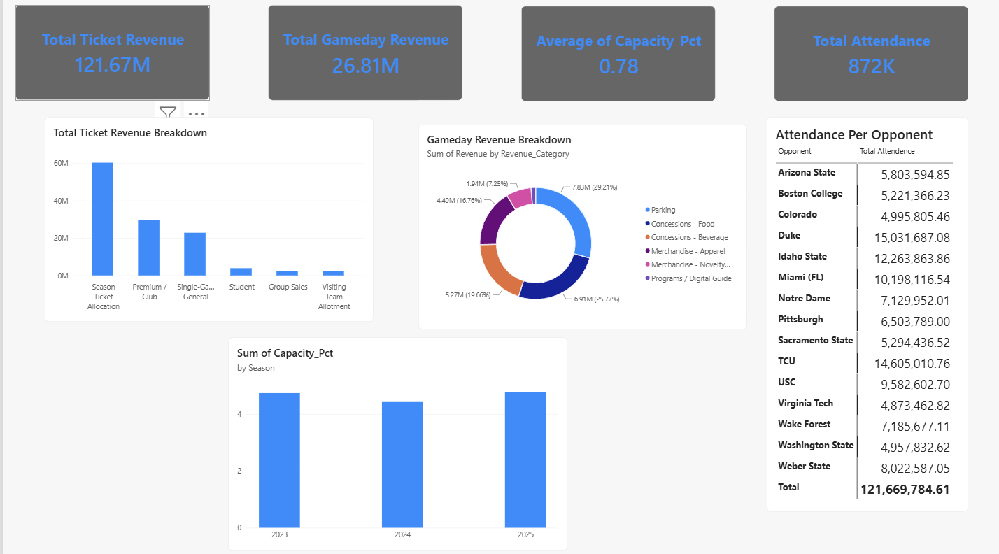

🏈 Cal Berkeley Football Operations Analysis
A synthetic, multi-season (2023 Pac-12, 2024–25 ACC) business-operations dataset for a college football program — ticket sales by tier, gameday revenue by category, sponsorship, travel costs, budgets, and media revenue — modeled as an Excel workbook and connected to Power BI. The panels below are a Chart.js recreation of the first Power BI dashboard, driven by the same underlying numbers.
Ticket & Gameday Revenue
18 home games across three seasons, broken out by ticket tier and by gameday revenue category — parking, concessions, merchandise, and programs.
Ticket Revenue by Tier
Gameday Revenue by Category
Average Stadium Capacity by Season
Attendance by Opponent
| Opponent | Games | Total Attendance |
|---|
The Original Power BI Report
The panels above are a from-scratch Chart.js recreation, built directly off the workbook rather than a screenshot — here's the actual Power BI dashboard they're modeled on.
